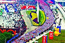
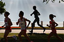

益跑首页
小工具
更多>>
金牌厦马
厦马简介－最好口碑的金牌赛事
厦门国际马拉松赛创办于2003年，由中国田径协会和厦门市政府联合主办，由中央电视台和厦门电视台联合直播，国内外40余家电视台转播。经过几年的发展，厦门国际马拉松赛以其较高的竞赛水平、广泛的群众参与和丰富的配套活动，成为中国最具影响力和国际知名度的马拉松赛事之一，2007年12月被国际田联评为“国际田联路跑金牌赛事”，并连续三年获此殊荣。
厦马史：一封邮件开启的马拉松
厦门马拉松大事纪
厦门――天时地利人和的马拉松城市
为你骄傲－值得铭记的厦马人物
厦门马拉松：环岛路雕塑群
《我奔跑》厦门马拉松主题曲 MV
赛事宝典

2013厦马全攻略
小编从天气、交通、赛前准备、比赛节奏、医疗站、饮料站、赛后休整等方面对厦马参赛跑友给出一些建议，希望大家能够参考。
厦马交通指引
厦门吃货走起！
最美厦马路线：环岛路
厦马住宿指引：火车站附近
厦马住宿指引：起终点附近
兔子攻略：怎么找？怎么跟？怎么跑？
更多>>
兔子军团
“兔子”起源
配速员（Pacemaker，又叫领跑员、兔子，以下简称“兔子”）是中长跑比赛中带领一组跑者保持某一特定速度的跑者，其作用是为其它跑者提供速度参考和避免滥用迷惑等战术。
美津浓益跑网厦马兔子军团招募
美津浓益跑网厦马兔子军团成员简介
根据厦马分段关门时间的兔子配速
益跑网“最靠谱兔子”选拔标准
新方法判断靠谱兔子（Pacer）
美津浓上马兔子团战报
更多>>
赛事新闻
明年1月5日 厦门马拉松如期开跑
记者从厦门国际马拉松赛组委会获悉，2013年厦门国际马拉松赛将如期于1月5日上午8时鸣枪开赛（女子专业选手全程马拉松比赛7点45分单独出发）。
厦马纪念牌 今年会多重？
厦门马拉松：首次启用GPS救护车调度系统
厦马招募20位专业摄影师
厦门马拉松 全程名额已满
厦门马拉松赛 耄耋老人跑完全程
2012厦门出发视频
更多>>
赛记精华

2012厦门国际马拉松参赛后记
2012年1月11日，“厦马”完赛已是第四天了，但比赛当天的情景依旧历历在目。趁记忆之门尚未关闭，赶紧开始总结，以利再战。
厦门：我来啦-2011年厦门马拉松参赛记
2012厦马 个人好成绩 团体又得奖
2012厦马4:20，交作业！
像风一样自由--2010厦马记事
厦马――从此上马了
2011厦马 个人好成绩 团体得奖金
更多>>
初马指南
写给全马新手
从慢跑起步，逐渐成为长距离慢跑者，于是遥想有一天自己也将成为全程马拉松比赛中的一员。这是跑步者心中的目标，当初是遥不可及的梦想，不过有梦想者最终通过努力是有希望实现的。
比赛当天的9条建议
比赛前一周的8个建议
比赛日赛前一餐怎么吃
马拉松比赛的3个节奏策略
马拉松跑步新手的10大误区
比赛中需要注意的一些事项